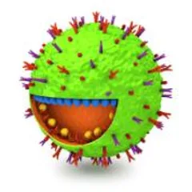
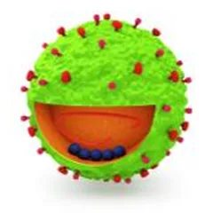
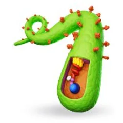
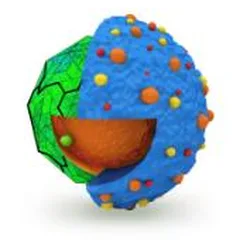
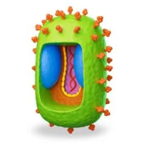

Science communication
Science comics, illustrated health education and evidence-to-policy communication, in English, Italian and Arabic.
PhD virologist, founder of STaiMIC, an initiative for trustworthy biomedical evidence, and award-winning science communicator. For more than 20 years I have made research accessible to public, professional and policy audiences, in English, Italian and Arabic.
 PhD · VirologyKU Leuven
Founder · Executive LeadSTaiMIC
Matera · Basilicata40.67° N · 16.60° E
PhD · VirologyKU Leuven
Founder · Executive LeadSTaiMIC
Matera · Basilicata40.67° N · 16.60° E
01 Find your way
Knock on the door that fits what you came for. Every section and event on this site carries the colour of its door.
Science comics, illustrated health education and evidence-to-policy communication, in English, Italian and Arabic.
Courses in AI for medicine and science, and hands-on training in reproducible workflows for biomedical data.
An initiative for reproducible, evidence-led biomedical computation, in its founding phase on the way to becoming a venture.
02 Where to meet me
Events I expect to attend in early 2027, each labelled with its door. All are pending; confirmation will be updated on this page as soon as possible.
BioRN Life Science Cluster · Heidelberg Congress Center, Germany
Event page ↗Biocat · Barcelona, Spain · runs 15 to 19 February
Event page ↗AI in public health · Dublin, Ireland
A speech bubble holds only a few words, so every word must earn its place. Through storytelling and imagery, comics capture attention and carry key messages in a visual, memorable way, which matters most when research and policy are written in complex language.
Published by the European Commission in all 24 official EU languages, plus Arabic and Ukrainian. Free to download.
I created the characters, storylines and initial panels, with artwork refined by Mar Bogdanis. Scientific review by ECDC and EMA.
Listed by the Children’s Hospital of Philadelphia. The series was part of DG SANTE’s #UnitedInProtection campaign. In September 2023, the Forbes Italia Social Award was given to DG SANTE for that campaign.
My award-winning comic, translated into Arabic by the Kuwait Foundation for the Advancement of Sciences in 2020 as The Amazing Adventures of the Virologists. The Arabic edition came with songs based on the comics, so children could learn while singing, and won the Arab Thinking Award.
My multilingual science comics have been the most popular communication materials on vaccines on the WHO Vaccine Safety Net website.
Comics that borrow myths from African, Caribbean and Latin American cultures to raise awareness of arboviruses and to teach about them in the communities they affect most.
Comics are not everyone’s route to health literacy, so I also write short, peer-reviewed articles.
A comic miniseries on influenza for one of the Arab world’s best-known children’s magazines.
With AI and software such as Maya, I revive older educational books, alone or with partners who ask for it, always with expert checks on accuracy.






My sketches of virus families became the 3D characters of the Laboratory of Virology and Antiviral Research, modelled by Mattia Genini.
Materials are only useful if people pick them up. Mine have reached journal covers, European university teaching and classrooms on four continents.
The Journal of the Pediatric Infectious Diseases Society chose for its cover a drawing inspired by The Amazing Adventures of the Viruses, made during a workshop in Bani Walid, Libya (Volume 12, Issue 10).
My science communication reached university level when it was added to Innovirology, the EU-funded interactive guide for virology teaching, coordinated by Universidad Complutense de Madrid.
Training I have designed and taught, from AI for beginners to reproducible pipelines for biomedical data.
Levels 1 and 2, March to July 2024: machine learning, Orange data mining, Python for data science and reproducible research.
More than 60 teaching hours helping healthcare professionals interpret AI and adopt it responsibly.
Live, recorded and video formats on Zoom, YouTube and GitHub. Participants progressed to accepted oral presentations and teaching roles.
Promoting Nextflow-based training and development in the community.
HealthSeq-nf: learning to build and troubleshoot biomedical workflows, presented by Oscar Echeverri-Muñoz.
STaiMIC is an initiative I founded in Matera in 2026 with international partners. It is in its founding phase, on the way to becoming a venture, and works on reproducible, evidence-led biomedical computation, so that decisions in research and healthcare rest on evidence that can be traced and trusted.
Selected to contribute to the WHO/Europe Public Health Innovation Platform.
03 Career
My career began with viruses and antiviral strategies. It grew into a wider question: how do we make scientific evidence understandable, useful and worthy of trust?
Matera, Italy, with international partners
European Commission, DG SANTE
Italy, Europe and MENA
Belgium
Rega Institute, KU Leuven, Belgium
04 Record and service
Awards, appointments, publications and press, each with its source where one is online.
05 Work with me
I take on freelance projects and in-house roles with organisations that need research to reach people and policy.
My CV is available on request.
Fill in a few details, copy the message, then paste it into a direct message on X. Nothing is sent or stored by this page.